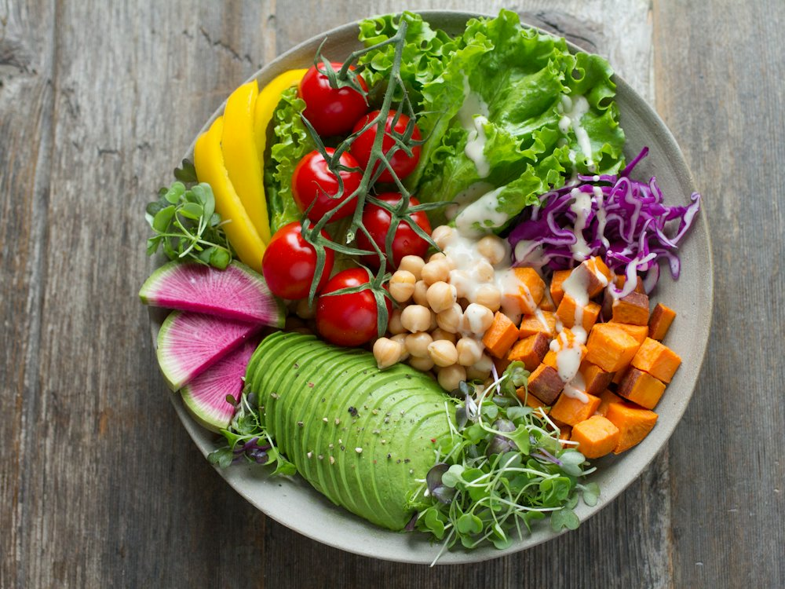

ГИППО "Магнум - 3
Бистро · Бистро · Алматы
Рейтинг
★ —
оценки гостей смотрите на картах
Год открытия
нет данных
в открытых источниках не нашли
Средний чек
≈2 800 ₸
оценка по типу заведения
Адрес и часы
📍 улица Бауыржана Момышулы, Алматы · Алатауский район
🕒 часы работы уточняются — смотрите в 2ГИС
О заведении
Бистро. Адрес и часы — по данным OpenStreetMap; оценки гостей смотрите в 2ГИС, Яндекс Картах или Google Maps.
Меню
Рядом в справочнике
Вася Блин · Вахтангури · Вилка · Грузинский двор · Да Винчик · Дамди Ленд